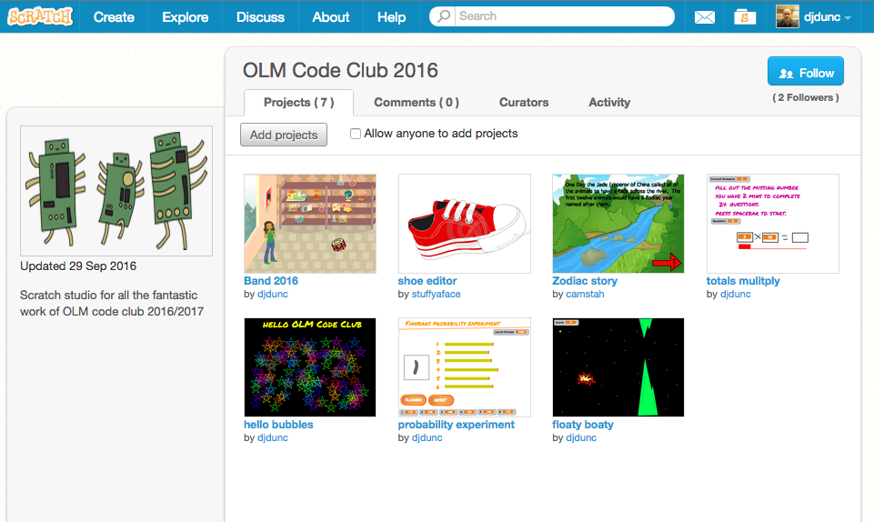

Our Lady of Muswell Code Club
Resources:
Activity Log
Code Club Projects - learning materials
OLM Scratch Studio
2016 Scratchers
MrPinkShep
potato081
mimi24798
creativego1H2
crazydann
insert_my_name_here
flubhub
forevergirlzxox123
Paco0409
icecream925
candyfloss7000
lolmooltheblack2
loladoodah123
kaker
lolscratch2006
katydoodah
webgirl22
cakebin
jamievardy2015
lolmooltheblack
mousegames123 (The Amazing one!)
jtw123
Week 5 - Chatbot 4/11/16
Using IF ... THEN ... statements to make decisions in a program.
Your challenge today is to learn how to use:
- TEXT INPUT - so you can make the program ask for information like your name or favourite animal
- IF THEN statements - so you can make decisions in your program
Jump to the Code Club Projects page and open up Chatbot.
Here is an example that Cakebin showed us before half term that uses the skills you are learning in this session:
Don't forget to add your work to the OLM Code Club Studio: https://scratch.mit.edu/studios/3456235/
Week 4 - Ghostbusters! 21/10/16
Using variables to remember information in scratch.
Your challenge today is to learn how to use:
- VARIABLES - so the program can remember information, like your age or a high score
- RANDOM NUMBERS - so you can make games that surprise you!
- GRID COORDINATES - so you can put your characters where you want on the screen

Jump to the Code Club Projects page and open up Ghostbusters. Here is one that I made earlier.
Don't forget to add your work to the OLM Code Club Studio: https://scratch.mit.edu/studios/3456235/
Week 3 - Lost in Space! 14/10/16
Making things move in scratch.
Your challenge today is to practice your skills at creating:
- LOOPS - making a program that repeats and repeats and repeats....
Don't forget to add your work to the OLM Code Club Studio: https://scratch.mit.edu/studios/3456235/
Here are a couple of great sketches from Katydoohdah and Lolscratch2006
Week 2 - Rock Band! 7/10/16
Getting started in scratch.
Your challenge today is to practice your skills at creating:
- A cool looking background - remember the STAGE?
- Some characters for your programme - remember the SPRITES?
- Making things do something - remember the SCRIPTS?
Don't forget to add your work to the OLM Code Club Studio: https://scratch.mit.edu/studios/3456235/

If you are starting the Python projects then jump to the About Me project and create a profile programme to show to the club at the end of the session.
Week 1 at OLM Code Club 30/9/16
What do we do at Code Club?
We will be making animations, games, websites, and much more. Code Club is all about using computers to help us make cool stuff. A key thing you will learn is how to program computers to make them follow your instructions.
We will be sharing our examples from code club on our Studio. This is important because a great way to learn is to look at how other people have solved problems that you may be trying to work out. For example, how do I make a spaceship look like it has blown up? TIP FOR THE DAY: we are going to be "pair programming" since it is fun to work together and two heads can usually solve problems better than one!
Club Rules
What?! You have rules?
What will we be doing?
In term one we will be covering:
- Scratch Module 1 - 6 great games to cover the basics of what you need to know to make your own game, animation, adventure story etc.
- Scratch Module 2 - 6 more challenges which end in you making your own game
- BBC Micro:bit - we will be getting 8 of these fantastic kits some time after half term - watch this space...
- A Christmas special - what will we make this year?
For the experienced Code Clubber you can join in with the above (note there are some new scratch challenges on the Code Club website) or you can:
- Try the new Python Module - it is ace!
- Build a website for Code Club (or maybe your own blog or web design business)
- Create your own project using a makey makey, or use arduino to flash some lights, or program some robots, or make models for 3D printing...
Let's get started!
A quick introduction to the Scratch 3 S's: stage - sprites - scripts. A second TIP FOR THE DAY: coding is all about giving computers instructions so that they do the task you want them to - we call these instructions ALGORITHMS (but you might also know them as recipes).

Log in to Scratch (we will help) and make sure your name is on the activity log.
Experienced Code Clubbers, can you be ready to say at the end of todays club a little description of what you plan to work on this term.
Welcome to OLM Code Club Pages 26/9/16
Over the course of 2016/2017 term we will be uploading examples of our work here. We have been running since 2013 thanks to a number of parent volunteers helping out. Previous work was more recently here and in 2014 here.